Background
Physical AI, action models, and existing adaptation paradigms
Motivation
Grounding failures, irreversible actions, and the case for code
Method
Fixed execution, code evolution, repair memory, and trajectory feedback
Experiments
Benchmark results, transfer, efficiency, and stronger models from harness data
An action model is a component of an embodied agent.
Ground the current scene
Objects, target poses, and changes
Interpret the task
Referents, constraints, and stages
Execute physical behavior
Motion and contact-rich control
| Action backend | What it provides | What a complete system must organize |
|---|---|---|
| VLA | Images + instruction → actions | Task decomposition, grounding, execution checks, memory, and feedback |
| WAM | World evolution + action prediction |
HarnessPAI treats the action model as a primitive inside an executable system.
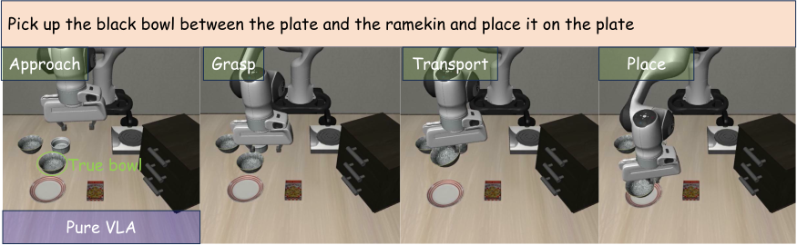
π₀.₅ across Spatial / Object / Goal
Object positions change
Instruction and target change
Robust execution requires updating the task’s referents and geometry as conditions change.
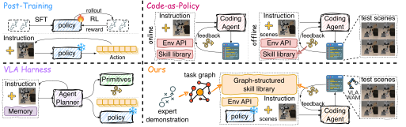
Post-training
Adapt model weights with trajectories or rewards
Code as policy
Execute programs built around environment APIs
VLA harness
Organize a frozen model through an agent and memory
HarnessPAI retains learned action primitives and evolves the executable code around them.
Pick up the black bowl
not between
the plate and the ramekin.
- The negation changes the intended bowl.
- The VLA still grasps the original target.
- HarnessPAI re-grounds the referent before acting.
Same instruction.
Changed geometry.
- The plate and a distractor bowl exchange positions.
- The VLA grasps and transports the target bowl.
- Placement still targets the plate’s old location.
Keep the motor skill;
update where it should act.
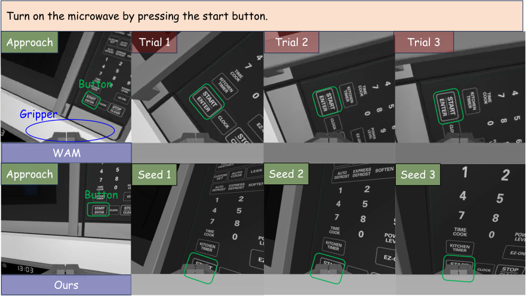
Observed failure
The WAM reaches the microwave but does not complete the press.
Harness response
Ground the small target, align the action, and verify the resulting state.
Task completion needs explicit geometry and observable success checks.
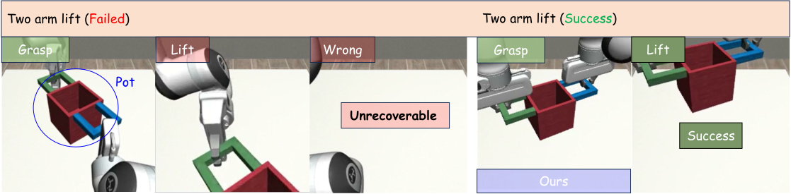
Before a risky action
Ground the object and verify the prerequisites.
During execution
Use current observations and predefined checks.
A stable, inspectable program aims to prevent costly failures before committing the next action.
A wrong action can
change the world.
- The dropped pot falls below the table and cannot be recovered in this rollout.
- Reasoning after the drop may be too late to complete the task.
- Ground the grasp and check its conditions before lifting.
Verify before acting;
revise between rollouts.
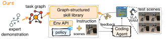
Executable
Compose perception, reasoning, and learned actions
Inspectable
Locate failed stages and execution checks
Evolvable
Repair and validate code between rollouts
Retain the learned action primitive; make the surrounding task program explicit and reusable.
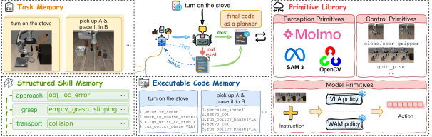
Task memory
Retrieve an existing task program
Structured skill memory
Retrieve failures and repairs by stage
Primitive library
Perception, control APIs, and models
Existing task: retrieve and execute. New task: evolve code using accumulated repair knowledge.
WITHIN A ROLLOUT
Open-loop at the program level
Ground → act → verify → proceed
- The task program remains fixed.
- Sensors and low-level feedback remain active.
- Predefined branches, stopping, and checks still run.
BETWEEN ROLLOUTS
Closed-loop evolution
Execute → diagnose → revise → validate
- Use traces, outcomes, and rollout videos.
- Edit an isolated candidate program.
- Promote code only after validation.
The program changes between attempts; observations and checks guide execution within each attempt.
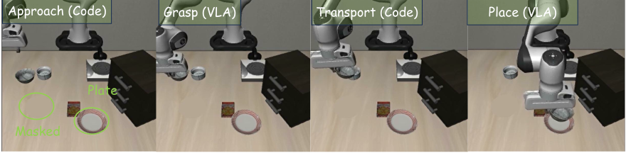
| Task stage | Executor | Purpose |
|---|---|---|
| Ground & approach | Fixed code · perception + geometry | Locate the target and reach a valid pose |
| Grasp | VLA primitive | Perform contact-rich manipulation |
| Transport | Fixed code | Move to the current destination |
| Place | VLA primitive | Complete placement and check the outcome |
A verified milestone gates the next stage of the program.
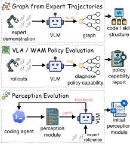
OPTIONAL INPUTS
- Expert video → workflow graph
- Model rollouts → capability assessment
- Perception-heavy task → initialized perception code
One required core:
execute, diagnose, and repair.
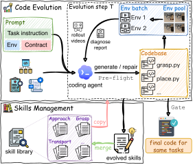
- WriteEdit isolated candidate code
- Pre-flight & probeCheck execution; revisit 3 failing seeds
- Full batchDetect repairs and regressions
- PromoteStore validated code and new skills
| Component | Responsibility | Signal |
|---|---|---|
| Success contract | Specify scope, goal, and non-success signals | Shared across the evolution loop |
| Code writer | Edit and synthesize the next repair | Candidate code and revision plan |
| Video diagnoser | Inspect rollout videos by workflow node | Failure hypotheses and regressions |
| Deterministic gate | Check authoritative milestone / goal conditions | Environment-grounded outcome |
A clean exit is insufficient
Terminal code state and dense reward alone do not establish task success.
Evidence remains independent
The writer’s convergence claim cannot promote its own program.
The contract fixes what success means before code evolution begins.

A new failure at a familiar node retrieves a repair and its maintained code implementation.
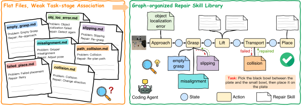
Flat files
A broad search across loosely associated problem notes
Node-indexed skills
Approach, grasp, transport, or place identifies the relevant repairs
The workflow node is the retrieval key; the referenced code remains the implementation.
LIBERO-PRO has no benchmark-provided demonstrations for its perturbed variants.
Execute the harness
Run Base, Swap, and Task scenes
Keep successful trajectories
Observation–action sequences
that pass the success gate
Fine-tune VLA / WAM
Distill execution experience
into model parameters
| Main harness evolution | Additional model-feedback study |
|---|---|
| Model weights frozen; code evolves | Successful rollouts train model weights |
| Validated programs support repeated execution | No new human demonstrations for the collected variants |
The demonstrated feedback is harness → data → model; alternating co-evolution remains future work.

| Setting | Development / training | Evaluation |
|---|---|---|
| LIBERO / PRO · π₀.₅ | 15 development seeds | 50 seeds, including those 15 |
| robosuite · GraspNet | Seeds 101–125 | Disjoint seeds 1–100 |
| RoboCasa · WorldDreamer | Fixed-layout evolution | 18 Atomic-Seen tasks × 20 seeds |
| BEHAVIOR-1K · GraspNet | Seeds 26–35 | Zero-shot 1–25; then adapt failures |
| VLA / WAM fine-tuning | Seeds 0–39 | Held-out seeds 40–49 |
Main benchmarks evolve code with frozen backends; post-training evaluates updated model weights.
LIBERO-PRO · π₀.₅
34.9% → 96.5%+61.6 percentage points
3 suites × 2 perturbations
60 tasks × 50 layout seeds
ROBOCASA · WORLDDREAMER
65.0% → 92.2%+27.2 percentage points
Atomic-Seen subset
18 tasks × 20 seeds
The improvement comes from evolving the executable system while retaining the action model.
| Method | Spatial (%) | Object (%) | Goal (%) | Overall (%) |
|---|---|---|---|---|
| π₀.₅ · authors’ evaluation | 95.6 | 100.0 | 95.2 | 96.9 |
| π₀.₅ RLinf | 99.0 | 96.0 | 97.0 | 97.3 |
| AtomVLA | 96.4 | 99.6 | 97.6 | 97.9 |
| Harness VLA · π₀.₅ | 97.0 | 100.0 | 94.0 | 97.0 |
| HarnessPAI · π₀.₅ | 97.2 | 100.0 | 97.2 | 98.1 |
Overall task success
96.9% → 98.1%
All 10 tasks across the 50-seed evaluation
The larger robustness gain appears when the instruction or scene is perturbed.
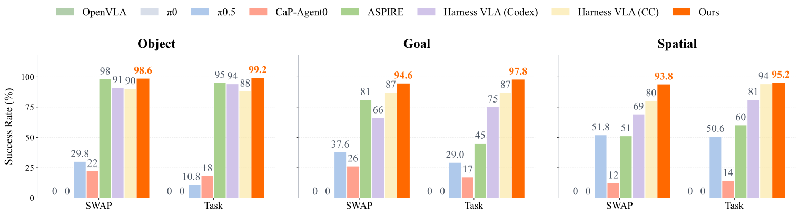
vs. 34.9% for the frozen π₀.₅
96.5% vs. 87.7% for Harness VLA CC
Every suite / perturbation stays above 93%
One program per task is reused unchanged across Base, Swap, and Task conditions.
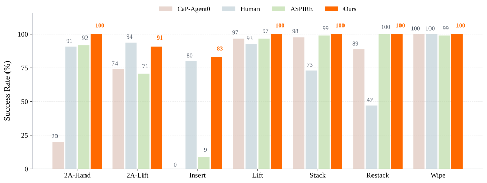
+15.3 pp over ASPIRE
+74 pp over ASPIRE
+20 pp over ASPIRE
Five of seven tasks reach 100% on evaluation seeds disjoint from evolution.
| Method | Backend / family | Atomic-Seen success |
|---|---|---|
| π₀.₅ | VLA | 39.6% |
| RLDX-1 | VLA | 60.0% |
| WorldDreamer | WAM · authors’ evaluation | 65.0% |
| Harness VLA · Codex | Harness · prior paper | 91.6% |
| HarnessPAI · WorldDreamer | Harness · same WAM | 92.2% |
65.0% → 92.2% +27.2 pp
The same design improves both a desktop VLA system and a mobile WAM system.
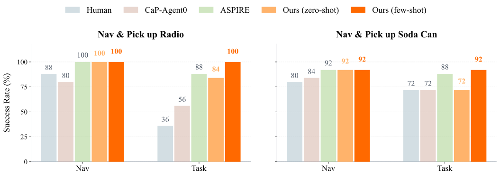
Zero-shot → adapted
Zero-shot → adapted
Eight repair rounds complete every navigable episode in this evaluated set.
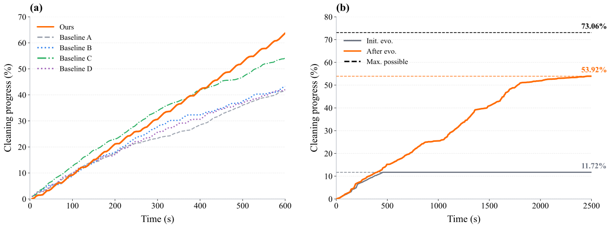
Final coverage against the plotted baselines
Initial → evolved policy
Sensor feedback and a control API are sufficient to instantiate the evolution loop.
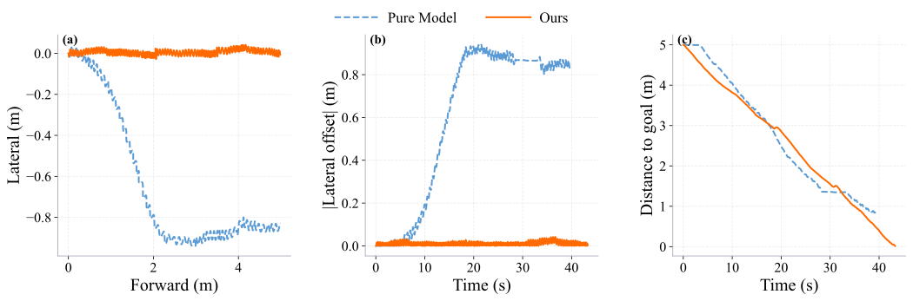
Lateral drift over 4 m of forward progress
Lateral error; reaches the endpoint
The harness measures heading error and steers the frozen walking primitive.
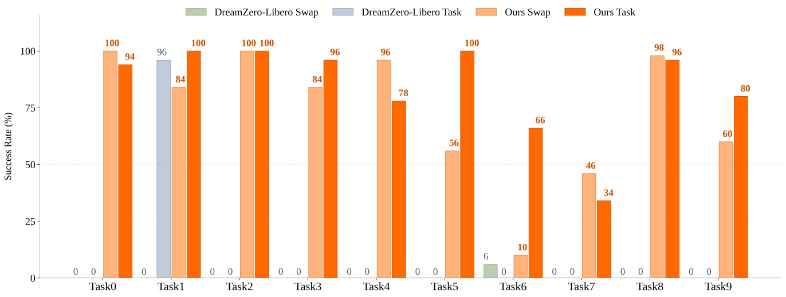
Frozen DreamZero + transferred code
Frozen DreamZero + transferred code
Keep the code, perception, and checks; replace only the action-model calls.
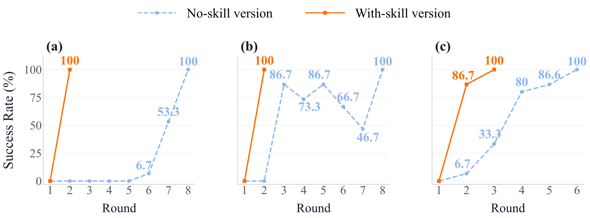
Task 0
A blocking failure delays progress
Task 1
Edits can introduce regressions
Task 5
Local corrections accumulate
With skills, all three representative tasks reach 100% development success within two rounds.
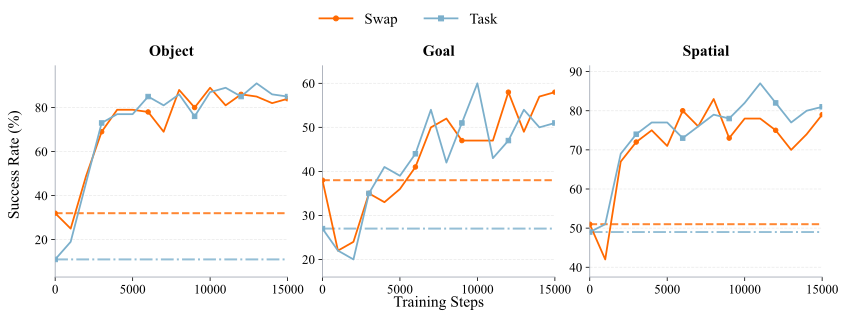
| Separate suite models | Object | Goal | Spatial |
|---|---|---|---|
| Original → fine-tuned | 21.5% → 88.0% | 32.5% → 54.5% | 50.0% → 82.5% |
| Gain from harness data | +66.5 pp | +22.0 pp | +32.5 pp |
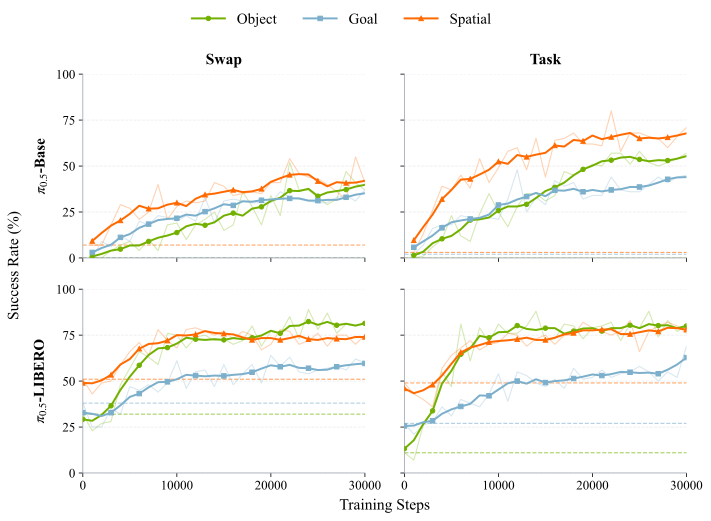
π₀.₅-LIBERO
34.9% → 73.7%+38.8 percentage points
Further improvement after
prior LIBERO fine-tuning
π₀.₅-BASE
Near zero → 53.3%Harness data also adapts a model
without prior LIBERO fine-tuning
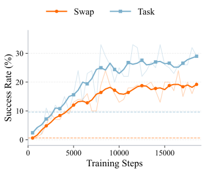
| Object | Original | Fine-tuned |
|---|---|---|
| Swap | 0.6% | 24.0% |
| Task | 9.6% | 29.0% |
| Mean | 5.1% | 26.5% |
+21.4 pp
One shared checkpoint
selected at 8,500 steps
Physical AI needs an executable system around the action model
Code coordinates perception, task reasoning, learned actions, and execution checks.
Stable execution and cumulative improvement use different timescales
Run a fixed program within each rollout; evolve code and reuse node-level repairs between rollouts.
The converged harness is also a source of expert demonstrations
Success-filtered trajectories improve standalone VLA and WAM models through supervised fine-tuning.
EXECUTION · FROZEN BACKENDS
+61.6 pp LIBERO-PRO · +27.2 pp RoboCasa
MODEL LEARNING · HARNESS DATA
+38.8 pp π₀.₅-LIBERO · +21.4 pp DreamZero
Stronger action models and better executable harnesses are complementary.
Standardize atomic-action interfaces
Give PPO, VLA, and WAM primitives a shared instruction-to-action contract
so the harness can compose stronger backends through a uniform interface.
Use scene models to stabilize perception
Explore maps, persistent scene models, and real-to-sim transfer
to reduce repeated grounding cost and improve reliability.
Combine coding agents with reusable program packages
Retrieve or lightly adapt validated code for familiar subtasks;
reserve high-level reasoning for novel situations in long-horizon tasks.
Explore alternating harness–model improvement
Fine-tune on successful trajectories, then re-evolve the harness around the improved model;
test whether successive cycles yield further gains.
Proposed directions beyond the experiments reported in this paper